Restoration
Flowing water introduces movement without noise, helping rooms feel calmer, slower, and more balanced.
Wellness Waters is a residential-first collection of flowing water, waterfalls, streams, and abstract water motion selected for rooms that need calm, restoration, and visual breathing space — from living rooms and primary suites to spa-inspired retreats, boutique hospitality, wellness spaces, and quiet healthcare interiors.

Wellness Waters is positioned first as a residential wellness collection, with commercial applications for hospitality, spa, healthcare, and senior living environments lower on the page.

Large-scale water imagery for warm residential gathering spaces.

Soft water rhythm for living rooms, lounges, and retreat spaces.

Restorative color and calm for bedrooms and primary suites.

A contemporary option for rooms that need calm without literal scenery.
The collection is organized around how water changes the feeling of a room: soft movement, visual quiet, reflected light, and a stronger connection to nature.
Flowing water introduces movement without noise, helping rooms feel calmer, slower, and more balanced.
Water imagery can make a bedroom, living room, suite, or wellness space feel more intentional and emotionally complete.
Forest streams, waterfalls, and abstract water surfaces create a nature connection without forcing a literal theme.
A large waterfall piece can bring natural movement and visual breathing room into a warm living room without making the space feel commercial or clinical.
View ArtworkFlowing water imagery works especially well in rooms designed for slowing down: living rooms, lounges, reading areas, and spaces where calm rhythm matters more than dramatic scenery.
View Artwork
Soft sunset water motion introduces warmth, calm, and atmosphere above a bed while still feeling sophisticated enough for luxury residential interiors.
View ArtworkAbstract water pieces give bedrooms and quiet spaces a more contemporary wellness feel, adding softness and motion without becoming overly thematic.
View Artwork
Wellness Waters is strongest in interiors where soft movement, reflected light, and a connection to nature support the purpose of the room.
Large waterfall and stream artwork can create a calm focal point in gathering spaces, lake homes, mountain homes, and quiet luxury interiors.
Abstract water, sunset motion, and soft flowing imagery work especially well above beds, dressers, and primary suite walls.
Water-based artwork supports retreat-like rooms where warmth, calm, and a sense of escape matter.
Water imagery pairs naturally with stone, wood, linen, plaster, and soft daylight in wellness-oriented residential spaces.
Flowing water and forest streams support small rooms designed for quiet, reflection, and visual rest.
Water-based imagery gives boutique hospitality spaces a restorative destination feeling.
Flowing water and forest streams support rooms designed for conversation, reflection, and emotional restoration.
Placed lower in the collection strategy, water imagery can still soften patient-facing spaces and create a calmer first impression.
Use these comparisons to choose the right atmosphere for the room.
Wellness Waters uses flowing water, waterfalls, and stream movement to create restorative rhythm. Quiet Earth is calmer, more grounded, and better for rooms needing stillness and quiet visual weight.
Wellness Waters is more intimate, spa-oriented, and healthcare-friendly. Mountain Light is brighter, more expansive, and stronger for hospitality lobbies, lodge interiors, and executive statement walls.
Coastal Atmosphere feels open, airy, and shoreline-based. Wellness Waters feels more immersive, enclosed, and restorative for spa, therapy, healthcare, and wellness interiors.
Monochrome Stillness works best for offices, corridors, and restrained spaces. Wellness Waters adds more organic movement, softness, and biophilic warmth.
Each artwork below links directly to the purchase page on Dan Sproul Fine Art, where prints can be ordered in multiple sizes and formats including framed prints, canvas, acrylic, and metal.
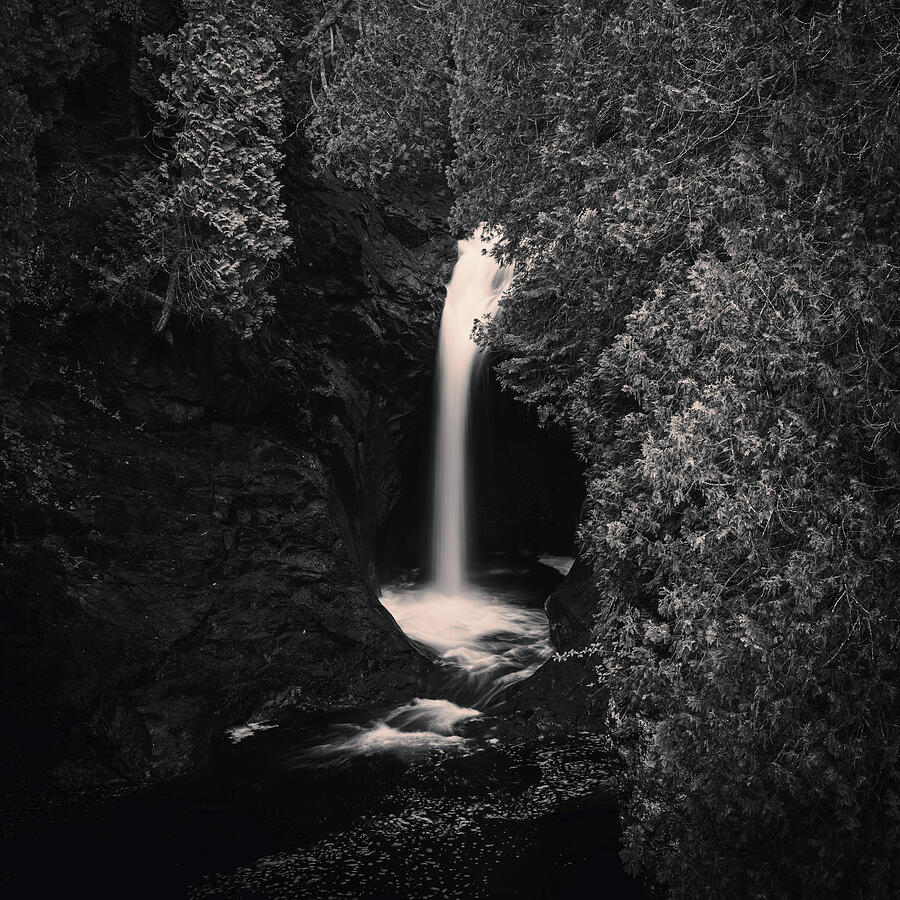
Black and white waterfall
A monochrome forest waterfall selected for wellness care, waiting rooms, and quiet hospitality interiors.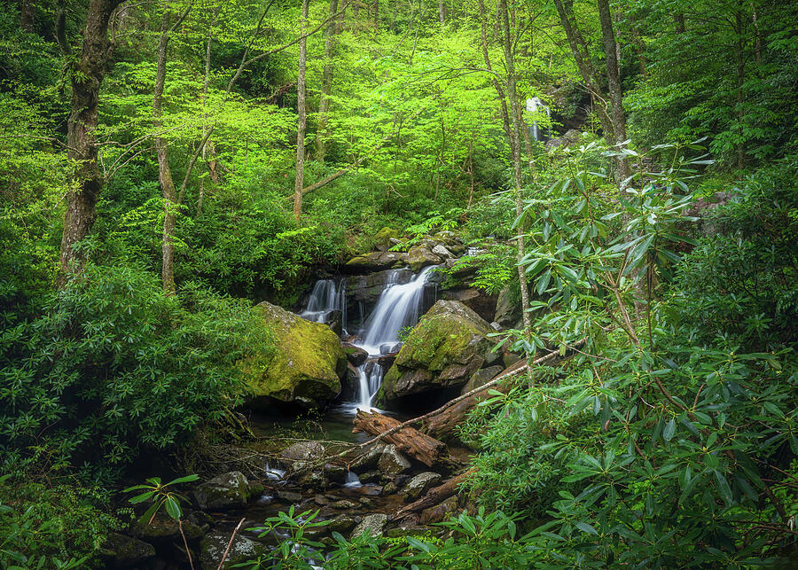
Smoky Mountains forest water
Soft green forest water imagery for spa treatment rooms, restorative residential spaces, and biophilic interiors.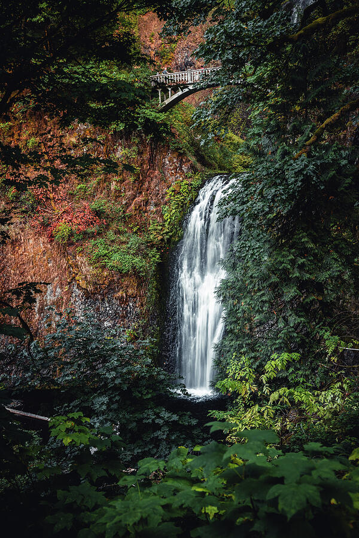
Pacific Northwest waterfall
A vertical Pacific Northwest waterfall statement piece for entryways, bedrooms, suites, and tall architectural walls.Monochrome water study
Black and white moving water with a quiet gallery feel for healthcare, hospitality, and modern interiors.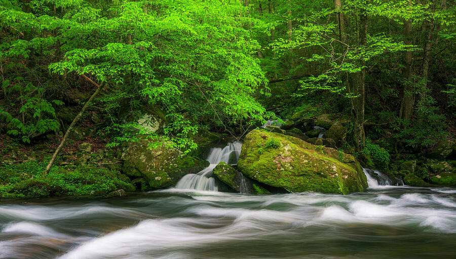
Restorative spring water
Spring forest cascades with calm movement and rich greens for wellness-focused design projects.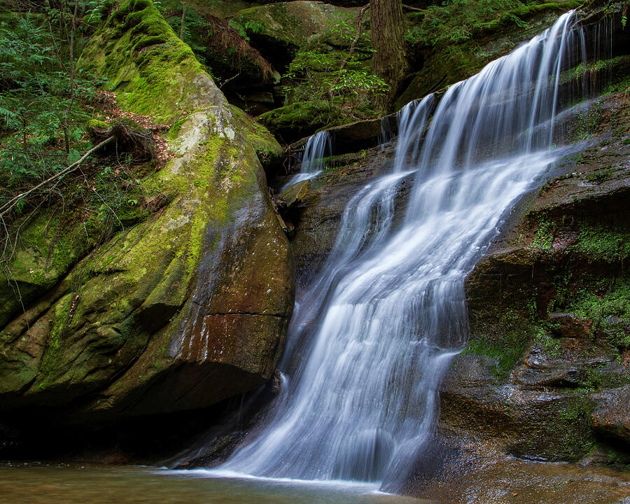
Moody long exposure
A darker long-exposure waterfall study for moody lounges, studies, bedrooms, and boutique interiors.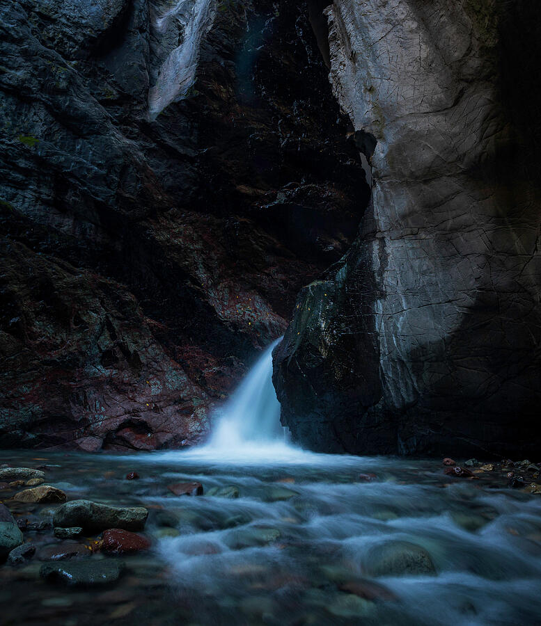
Colorado canyon waterfall
Immersive canyon water imagery with cool tones for spa corridors, bedrooms, and commercial wellness spaces.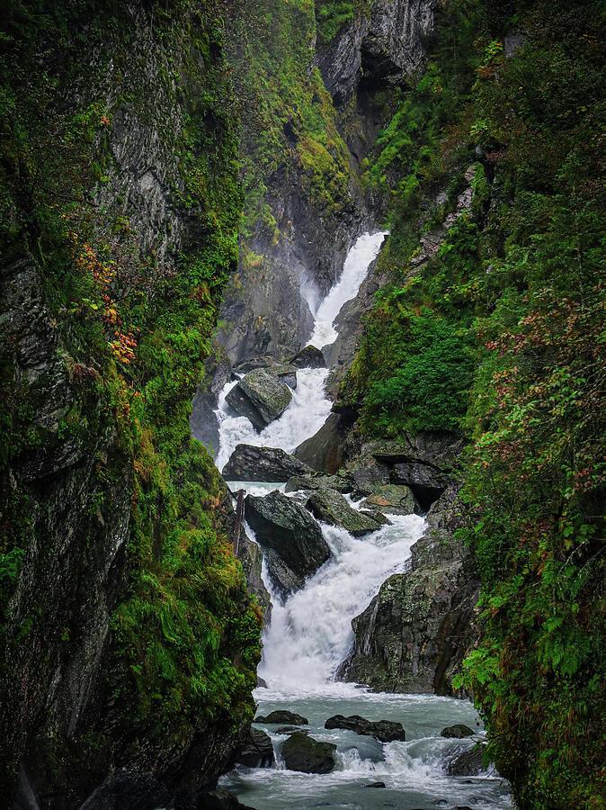
Alaska waterfall landscape
Alaska waterfall photography with natural movement for hospitality, lodge, and restorative nature-inspired rooms.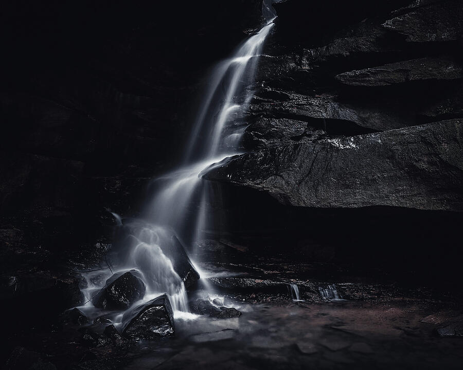
Ohio forest waterfall
Ohio forest waterfall artwork for regional projects, nature-focused interiors, and calming residential spaces.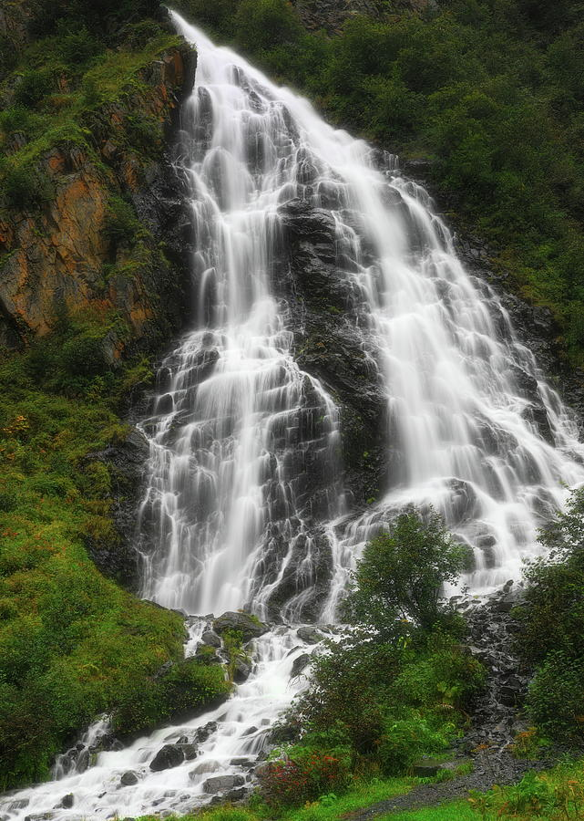
Ethereal Alaska cascades
Ethereal Alaska cascades for large vertical installations, hospitality suites, and dramatic natural focal points.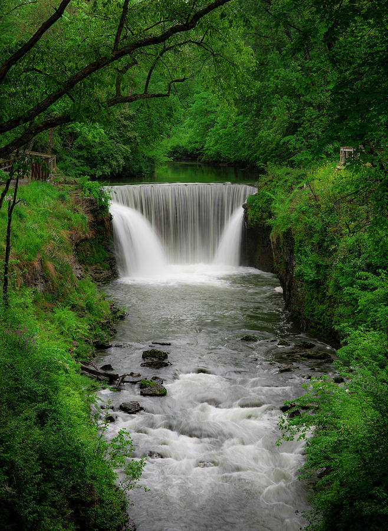
Spring green waterfall
Fresh spring green waterfall scenery for wellness clinics, residential interiors, and calming nature-based rooms.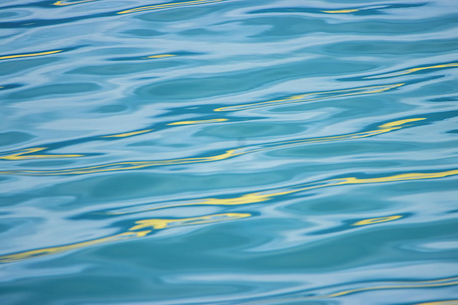
Abstract water serenity
Abstract blue water photography for spa reception areas, coastal interiors, and modern wellness environments.The Wellness Waters collection can be reviewed through a simple workflow that helps translate calming water imagery into real residential rooms, hospitality suites, wellness spaces, and commercial interiors.
Send a room photo, wall dimensions, project type, finish palette, preferred atmosphere, or inspiration images.
Artwork recommendations are selected around scale, orientation, architecture, lighting, mood, and intended use.
Receive visual previews showing artwork placement, proportion, alternate options, and presentation direction.
Artwork is available in framed prints, canvas, acrylic, metal, and custom-sized large-format options.

Wellness Waters was built for projects where artwork needs to soften the atmosphere, support calm movement, and feel intentional within the room rather than added as a final decorative layer.
Mockups can help compare horizontal, vertical, color, and monochrome artwork options before final selection.
Request Mockup For DesignersWellness Waters is organized to support homeowners, residential designers, hospitality teams, wellness clinics, and healthcare environments that need calming nature-based artwork with clear presentation options.
Artwork can be ordered in multiple formats and custom sizes, with room mockups available when scale, orientation, placement, or collection fit needs to be reviewed before purchase.
View Designer PageEmail a room photo, project direction, or wall dimensions for a complimentary mockup preview. I can help show how a Wellness Waters piece may look in a spa, healthcare space, hospitality suite, residential interior, corridor, lobby, or treatment room.
About the Artist
Dan Sproul is an Ohio-based fine art photographer and mixed media artist creating original artwork for hospitality, healthcare, corporate, wellness, and residential interiors across the United States.
His collections are organized by how a space should feel: quiet, restorative, atmospheric, grounded, memorable, or refined. That makes each page easier to use as a design resource instead of a traditional photography portfolio.